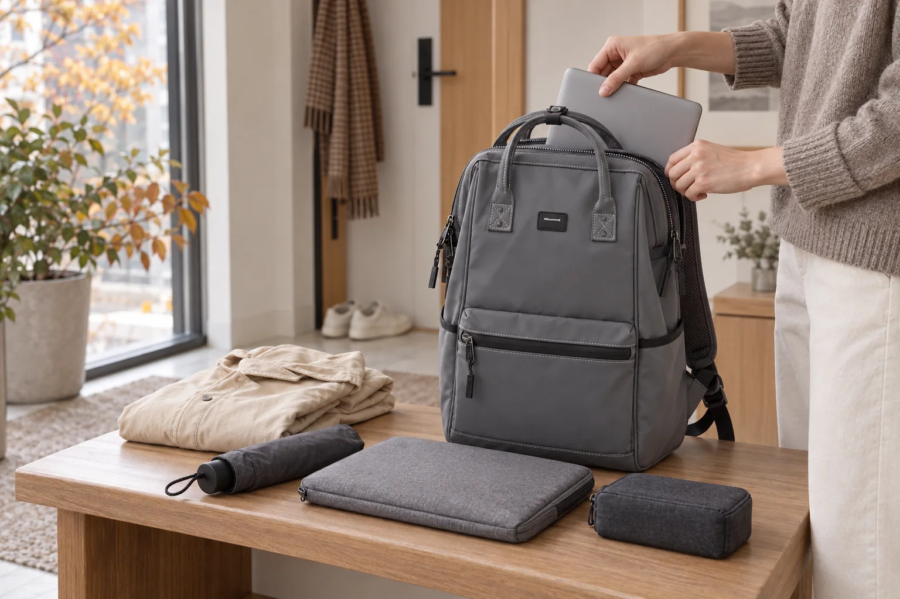

가을 환절기 출근 백팩 준비법: 겉옷·우산·전자기기 나누기

가을 출근길은 아침과 낮의 기온차 때문에 평소보다 챙길 물건이 늘기 쉽습니다. 얇은 겉옷과 접이식 우산, 노트북을 한 칸에 밀어 넣으면 필요한 순간에 꺼내기 어렵고 젖은 물건이 다른 짐과 닿을 수도 있습니다. 날씨를 확인한 뒤 물건을 세 그룹으로 나누면 가방의 부피를 크게 늘리지 않고도 변화에 대비할 수 있습니다.
1. 날씨와 일정으로 세 그룹을 정하세요
출발 전 강수 여부와 낮 기온, 외근 일정을 확인합니다. 준비물은 체온 조절용 겉옷, 비 대비 물품, 업무용 전자기기로 먼저 나누세요. 그다음 지갑과 열쇠처럼 늘 필요한 소지품만 더하면 ‘혹시 몰라’ 넣는 물건을 줄이기 쉽습니다.
2. 얇은 겉옷은 넓고 납작하게 접으세요
가디건이나 얇은 바람막이는 주머니를 비우고 가방의 가로 폭에 맞춰 접습니다. 둥글게 말아 빈틈에 밀어 넣기보다 메인 수납부 앞쪽에 납작하게 세우면 노트와 파우치를 덜 누릅니다. 지퍼가 팽팽해진다면 작은 파우치 하나를 빼거나 겉옷을 손에 드는 편이 낫습니다.
3. 우산은 젖은 물건 구역으로 분리하세요
접이식 우산은 마른 상태에서도 커버나 방수 파우치에 넣어 외부 포켓처럼 전자기기와 떨어진 위치에 둡니다. 사용 후에는 물기를 충분히 털고 임시 커버에 넣되, 귀가하거나 사무실에 도착하면 바로 꺼내 펼쳐 말리세요. 젖은 우산을 가방 속에 오래 두지 않는 것이 중요합니다.
비에 젖은 날의 마무리는 백팩을 안전하게 말리는 순서에서 확인하세요.
4. 노트북과 케이블은 서로 나누세요
노트북은 크기에 맞는 전용 수납칸에 넣고, 충전기와 케이블은 작은 파우치에 모읍니다. 단단한 어댑터가 기기 표면을 직접 누르지 않도록 칸을 분리하세요. 케이블을 매번 같은 방식으로 정리하면 출근 직전 빠뜨린 물건도 알아차리기 쉽습니다.
충전 소품은 케이블이 엉키지 않는 5단계 수납법을 함께 참고하세요.
5. 이동 중 꺼낼 물건은 위쪽에 두세요
교통카드, 이어폰, 작은 손수건처럼 이동 중 자주 쓰는 물건은 정해 둔 앞 포켓이나 상단 포켓에 둡니다. 혼잡한 지하철에서 메인 지퍼를 자주 열지 않도록 꺼내는 순서를 미리 정하면 동선이 단순해집니다. 자세한 이동 점검은 지하철 출퇴근 백팩 체크리스트로 이어집니다.
6. 퇴근 후 3분 동안 가방을 초기화하세요
젖은 우산과 사용한 겉옷을 먼저 꺼내고, 영수증과 빈 포장처럼 다음 날 필요하지 않은 물건을 비웁니다. 노트북과 충전기는 다음 일정에 맞춰 다시 넣고 포켓의 지퍼를 열어 짧게 환기합니다. 매일 같은 위치로 돌려놓으면 다음 날 날씨에 맞는 물건만 바꾸면 됩니다.
가을 출근 전 체크리스트
- 오늘 강수 여부와 외근 일정을 확인했나요?
- 겉옷이 노트북과 지퍼를 누르지 않나요?
- 우산을 전자기기와 분리했나요?
- 충전기와 케이블을 한 파우치에 모았나요?
- 이동 중 꺼낼 물건의 위치가 정해져 있나요?
수납칸의 수보다 중요한 것은 물건의 성격과 꺼내는 순서입니다. 회색 No.1884의 제품 구성은 Himawari No.1884 상세 정보에서 살펴볼 수 있습니다.
참고·안내
- Himawari No.1884 제품 정보
- 전자기기와 우산의 보관 방법은 각 제품 제조사의 사용·관리 안내를 우선 확인하세요.
- 대표 이미지는 Himawari No.1884 제품 사진을 참조해 만든 연출 이미지입니다.
자주 묻는 질문
얇은 겉옷은 백팩 어디에 넣는 게 좋나요?
마른 겉옷은 넓게 접어 메인 수납부 앞쪽이나 별도 파우치에 두면 다른 물건을 누르는 것을 줄일 수 있습니다. 노트북 수납칸과 지퍼 작동을 방해하지 않는지 확인하세요.
접이식 우산을 전자기기와 함께 넣어도 되나요?
사용한 우산은 물기를 충분히 털고 방수 파우치나 외부 포켓에 분리하세요. 귀가 후에는 바로 꺼내 펼쳐 말리고 전자기기와 같은 칸에 장시간 두지 않는 편이 좋습니다.
환절기마다 가방이 너무 무거워지면 어떻게 하나요?
날씨와 당일 일정을 확인한 뒤 겉옷, 비 대비 물품, 전자기기 세 그룹만 먼저 정합니다. 퇴근 후 영수증과 불필요한 소지품을 비우는 짧은 초기화 습관도 도움이 됩니다.